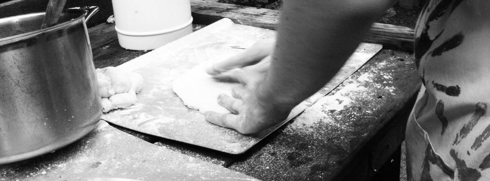
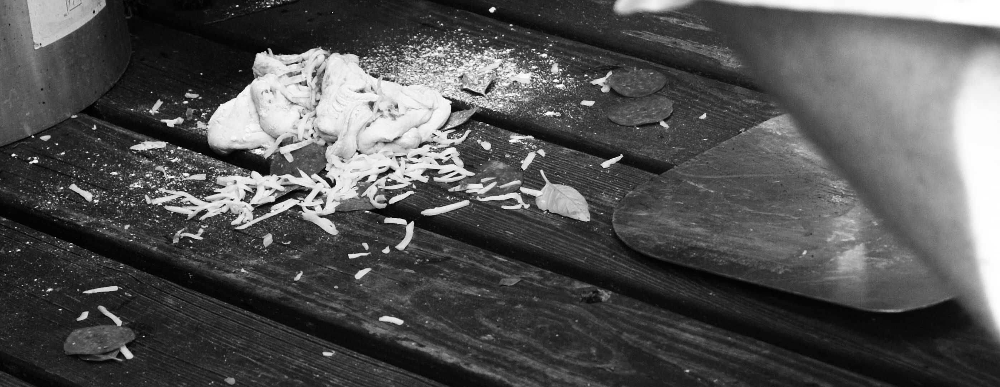

Supporting Science, One Shenanigan at a Time
Here at Tommy’s Pizzeria, we believe in one thing: Pizza. And Smiles. And Family. All of the above.
We aim to make you feel welcome as soon as you walk in the door, and we take pride in our food every step of the way.
Our History
Papa Tom
Before Tommy’s was the Tommy’s you know and love, it all started with a vision, many years ago, in 2025. We here at the Berg Field Center have always wanted to share our kitchen and home cooking with the broader community, and Tommy’s has helped realize that vision. What started as a joke that became a larger and more elaborately planned joke is now realized with real people eating real pizza. And a real person reading a real website.
Our namesake, Thomas Berg, didn't share this vision. In fact, we can't confirm or deny that he ever had pizza in his life. But what we do know is that his picture is on our wall, and that means something to us. Here's to you, Tom.

Our Vision
Our Thanks
